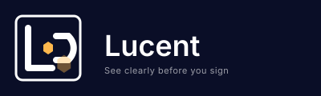
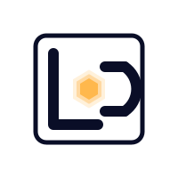
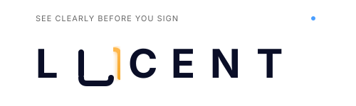
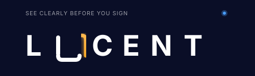
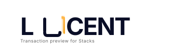

Professional logo variations for Lucent transaction preview platform. Click on each logo to see details. Right-click to download SVG files.
Design Philosophy: Interlocking L+C forming an eye/lens aperture with hexagonal center. Sophisticated, minimal, and highly versatile. Perfect for app icons with 1:1 ratio.


Icon Only: App icons, browser extension icon, favicon
Full Lockup: Website header, marketing materials, presentations
Monochrome: Legal documents, embossed merchandise, stamps
Design Philosophy: Pure typographic confidence with the "U" opened to create a glowing arc. Modern, confident, and highly legible. The opening represents portal/illumination.



Standard: Website headers, documentation, email signatures
Compact: Navigation bars, mobile headers, tight spaces
With Dot: Marketing materials where additional visual interest is needed
Method 1: Open each SVG in your browser, take a screenshot, and crop
Method 2: Open SVG in design tool (Figma, Illustrator, Inkscape) and export as PNG
Method 3: Use online converter like CloudConvert or SVGtoPNG.com
Recommended Export Sizes: 512x512px (icons), 1200x400px (headers), 2400x800px (high-res)
{kind=link}
{kind=link}
{kind=link}
{kind=link}
{kind=link}
{kind=link}
{kind=link}
{kind=link}
{kind=link}
{kind=link}